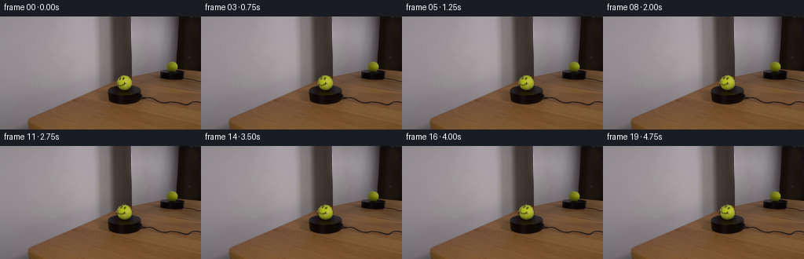
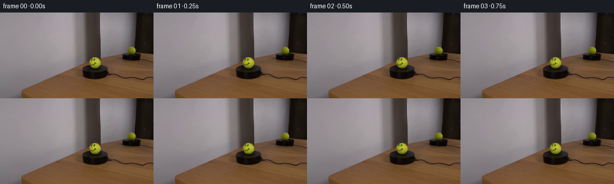
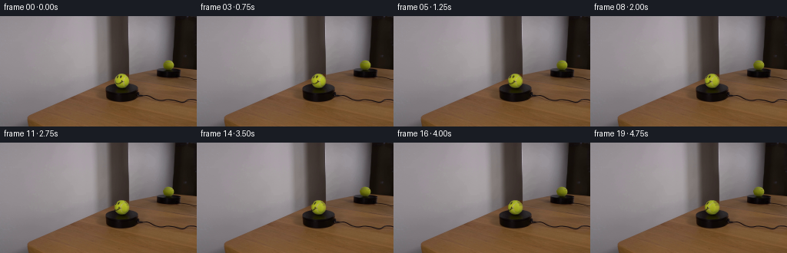
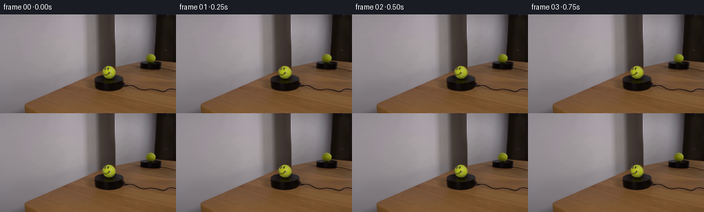

CODING AGENTS AS PIXEL WORLD MODELS
traex/DeepSeek-V4.1-Flash · 0118
点击播放 · 原生 RGB 像素
逐轮保存的候选
回放视频、检查图与代码变化。
每份候选均可单独播放。实际图片检查记录在下方工具轨迹中。
候选 01播放与检查图
点击播放 · 原生 RGB 像素


展开代码变化
--- 上一保存版本
+++ 本次保存版本
@@ -0,0 +1,179 @@
+"""Generate a locked-off rotation of the tennis ball and its mirror image."""
+
+from pathlib import Path
+
+import numpy as np
+from PIL import Image
+
+import artifact_io
+
+
+FRAMES = 20
+FPS = 4
+BALL_CENTER = (158.0, 84.0)
+BALL_RADIUS = 10.35
+REFLECTION_CENTER = (218.7, 63.1)
+REFLECTION_RADII = (7.0, 5.7)
+ROTATION_DEGREES = 30.0
+
+
+def _bilinear(image, xs, ys):
+ """Sample an HxWxC float image at floating point coordinates."""
+ h, w = image.shape[:2]
+ xs = np.clip(xs, 0.0, w - 1.001)
+ ys = np.clip(ys, 0.0, h - 1.001)
+ x0 = np.floor(xs).astype(np.int32)
+ y0 = np.floor(ys).astype(np.int32)
+ x1 = np.minimum(x0 + 1, w - 1)
+ y1 = np.minimum(y0 + 1, h - 1)
+ fx = (xs - x0)[..., None]
+ fy = (ys - y0)[..., None]
+ top = image[y0, x0] * (1.0 - fx) + image[y0, x1] * fx
+ bottom = image[y1, x0] * (1.0 - fx) + image[y1, x1] * fx
+ return top * (1.0 - fy) + bottom * fy
+
+
+def _smoothstep(edge0, edge1, value):
+ t = np.clip((value - edge0) / (edge1 - edge0), 0.0, 1.0)
+ return t * t * (3.0 - 2.0 * t)
+
+
+def _shading_from_luminance(rgb, nx, ny):
+ """Fit a smooth low-order light field, then divide it out as albedo."""
+ nz = np.sqrt(np.maximum(0.0, 1.0 - nx * nx - ny * ny))
+ features = np.stack(
+ [
+ np.ones_like(nx),
+ nx,
+ ny,
+ nx * nx,
+ ny * ny,
+ nx * ny,
+ nz,
+ ],
+ axis=-1,
+ )
+ design = features.reshape(-1, features.shape[-1])
+ colors = rgb.reshape(-1, 3)
+ coef, *_ = np.linalg.lstsq(design, colors, rcond=None)
+ fitted = (design @ coef).reshape(rgb.shape)
+ fitted = np.clip(fitted, 20.0, 215.0)
+ return fitted
+
+
+def _prepare_disc(source, center, radii):
+ cx, cy = center
+ rx, ry = radii
+ x0 = max(0, int(np.floor(cx - rx - 2)))
+ x1 = min(source.shape[1], int(np.ceil(cx + rx + 2)) + 1)
+ y0 = max(0, int(np.floor(cy - ry - 2)))
+ y1 = min(source.shape[0], int(np.ceil(cy + ry + 2)) + 1)
+ yy, xx = np.mgrid[y0:y1, x0:x1]
+ nx = (xx - cx) / rx
+ ny = (yy - cy) / ry
+ radius2 = nx * nx + ny * ny
+ inside = radius2 < 1.0
+
+ rgb = source[y0:y1, x0:x1].astype(np.float64)
+ shade = _shading_from_luminance(rgb[inside], nx[inside], ny[inside])
+ full_shade = np.zeros_like(rgb)
+ full_shade[inside] = shade
+ if not inside.all():
+ # Fill the tiny fit margin with the nearest valid light value.
+ from scipy.ndimage import distance_transform_edt
+
+ _, indices = distance_transform_edt(~inside, return_indices=True)
+ full_shade = full_shade[indices[0], indices[1]]
+
+ albedo = rgb / np.maximum(full_shade, 1.0)
+ return {
+ "box": (x0, y0, x1, y1),
+ "center": center,
+ "radii": radii,
+ "nx": nx,
+ "ny": ny,
+ "radius2": radius2,
+ "inside": inside,
+ "albedo": albedo,
+ "shade": full_shade,
+ }
+
+
+def _render_rotated_disc(frame, disc, angle, clockwise, mirror=False):
+ x0, y0, x1, y1 = disc["box"]
+ cx, cy = disc["center"]
+ rx, ry = disc["radii"]
+ nx = disc["nx"]
+ ny = disc["ny"]
+ inside = disc["inside"]
+
+ direction = 1.0 if clockwise else -1.0
+ theta = direction * np.deg2rad(angle)
+ if mirror:
+ theta = -theta
+ cos_t = np.cos(theta)
+ sin_t = np.sin(theta)
+
+ # Inverse image-plane rotation samples the original ball material.
+ sample_x = cos_t * nx + sin_t * ny
+ sample_y = -sin_t * nx + cos_t * ny
+ sample_px = cx + rx * sample_x
+ sample_py = cy + ry * sample_y
+
+ material = _bilinear(disc["albedo"], sample_px - x0, sample_py - y0)
+ rendered = material * disc["shade"]
+
+ # Preserve the source antialiased silhouette while keeping the sphere fixed.
+ radial = np.sqrt(np.maximum(disc["radius2"], 0.0))
+ alpha = 1.0 - _smoothstep(0.965, 1.015, radial)
+ alpha *= inside.astype(np.float64)
+ if mirror:
+ alpha *= 0.94
+
+ region = frame[y0:y1, x0:x1]
+ blend = alpha[..., None]
+ region[:] = region * (1.0 - blend) + rendered * blend
+
+
+def _render_ball(frame, disc, angle):
+ _render_rotated_disc(frame, disc, angle, clockwise=True)
+
+
+def _render_reflection(frame, disc, angle):
+ # A plane mirror reverses the apparent handedness of the rotation.
+ _render_rotated_disc(frame, disc, angle, clockwise=True, mirror=True)
+
+
+def generate(case_dir):
+ case_dir = Path(case_dir)
+ source = np.asarray(Image.open(case_dir / "first_frame.png").convert("RGB"))
+ source_float = source.astype(np.float64)
+
+ ball = _prepare_disc(
+ source_float,
+ BALL_CENTER,
+ (BALL_RADIUS, BALL_RADIUS),
+ )
+ reflection = _prepare_disc(
+ source_float,
+ REFLECTION_CENTER,
+ REFLECTION_RADII,
+ )
+
+ frames = np.empty((FRAMES, source.shape[0], source.shape[1], 3), dtype=np.uint8)
+ frames[0] = source
+ for index in range(1, FRAMES):
+ progress = index / (FRAMES - 1)
+ # Slow, constant angular motion over the five-second shot.
+ angle = ROTATION_DEGREES * progress
+ frame = source_float.copy()
+ _render_reflection(frame, reflection, angle)
+ _render_ball(frame, ball, angle)
+ frames[index] = np.clip(np.rint(frame), 0, 255).astype(np.uint8)
+
+ artifact_io.save(frames, case_dir)
+ return frames
+
+
+if __name__ == "__main__":
+ generate(Path(__file__).resolve().parent)
候选 02播放与检查图
点击播放 · 原生 RGB 像素

展开代码变化
--- 上一保存版本
+++ 本次保存版本
@@ -14,7 +14,7 @@
BALL_RADIUS = 10.35
REFLECTION_CENTER = (218.7, 63.1)
REFLECTION_RADII = (7.0, 5.7)
-ROTATION_DEGREES = 30.0
+ROTATION_DEGREES = 36.0
def _bilinear(image, xs, ys):
@@ -114,9 +114,20 @@
cos_t = np.cos(theta)
sin_t = np.sin(theta)
- # Inverse image-plane rotation samples the original ball material.
- sample_x = cos_t * nx + sin_t * ny
- sample_y = -sin_t * nx + cos_t * ny
+ nz = np.sqrt(np.maximum(0.0, 1.0 - nx * nx - ny * ny))
+
+ # Inverse spherical yaw. This is a vertical-axis spin, not a flat decal
+ # rotation, so the face foreshortens as it travels around the ball.
+ sample_x = cos_t * nx - sin_t * nz
+ sample_y = ny
+
+ # Only the camera-facing half of the original sphere has known material.
+ # At these small yaw angles the newly exposed strip is a thin edge region;
+ # clamp it to the visible rim rather than inventing a second face.
+ projected_radius = np.hypot(sample_x, sample_y)
+ clamp = np.maximum(projected_radius / 0.92, 1.0)
+ sample_x = sample_x / clamp
+ sample_y = sample_y / clamp
sample_px = cx + rx * sample_x
sample_py = cy + ry * sample_y
候选 03播放与检查图
候选 04播放与检查图
点击播放 · 原生 RGB 像素


展开代码变化
--- 上一保存版本
+++ 本次保存版本
@@ -10,8 +10,8 @@
FRAMES = 20
FPS = 4
-BALL_CENTER = (158.0, 84.0)
-BALL_RADIUS = 10.35
+BALL_CENTER = (158.1, 83.9)
+BALL_RADII = (10.1, 9.35)
REFLECTION_CENTER = (218.7, 63.1)
REFLECTION_RADII = (7.0, 5.7)
ROTATION_DEGREES = 36.0
@@ -147,7 +147,7 @@
def _render_ball(frame, disc, angle):
- _render_rotated_disc(frame, disc, angle, clockwise=True)
+ _render_rotated_disc(frame, disc, angle, clockwise=False)
def _render_reflection(frame, disc, angle):
@@ -163,7 +163,7 @@
ball = _prepare_disc(
source_float,
BALL_CENTER,
- (BALL_RADIUS, BALL_RADIUS),
+ BALL_RADII,
)
reflection = _prepare_disc(
source_float,
可观测工具轨迹
实际执行的命令与返回图片。
命令 1exit 0
/bin/bash -c "pwd && rg --files -g '"'!*.mp4'"' -g '"'!*.mov'"' | sort"
命令 2exit 0
/bin/bash -c "sed -n '1,240p' prompt.txt"
命令 3exit 0
/bin/bash -c "sed -n '1,280p' GENERATION_RULES.md"
命令 4exit 0
/bin/bash -c 'file first_frame.png && identify first_frame.png 2>/dev/null || true && ls -lah'
命令 5exit 0
/bin/bash -c "sed -n '1,260p' artifact_io.py"
命令 6exit 0
/bin/bash -c "sed -n '1,260p' player_template.html"
命令 7exit 0
/bin/bash -c "python - <<'PY'
from PIL import Image
import numpy as np
im=Image.open('first_frame.png')
print(im.mode, im.size, im.getbbox())
a=np.array(im.convert('RGB'))
print('shape', a.shape, 'dtype', a.dtype, 'min', a.min(axis=(0,1)), 'max', a.max(axis=(0,1)), 'mean', a.mean(axis=(0,1)).round(2))
# unique colors counts
u,c=np.unique(a.reshape(-1,3), axis=0, return_counts=True)
print('unique',len(u))
for i in np.argsort(c)[-20:][::-1]: print(tuple(u[i]), int(c[i]))
PY"命令 8exit 0
/bin/bash -c "python - <<'PY'
from PIL import Image
import numpy as np
im=np.asarray(Image.open('first_frame.png').convert('RGB')).astype(float)
# average 4x4, print luminance and dominant color labels
chars=' .:-=+*#%@'
for y in range(0,144,4):
row=''
for x in range(0,256,4):
p=im[y:y+4,x:x+4].mean((0,1))
lum=.2126*p[0]+.7152*p[1]+.0722*p[2]
row+=chars[min(9,int(lum/256*10))]
print(f'{y:03d} '+row)
PY"命令 9exit 0
/bin/bash -c "python - <<'PY'
from PIL import Image
import numpy as np
A=np.asarray(Image.open('first_frame.png').convert('RGB')).astype(int)
mx=A.max(2); mn=A.min(2); sat=mx-mn; lum=A.mean(2)
print('sat percentiles',np.percentile(sat,[0,50,75,90,95,97,98,99,99.5,100]))
# map: saturation high chars
chars=' .:-=+*#%@'
for y in range(0,144,3):
row=''
for x in range(0,256,3):
s=np.percentile(sat[y:y+3,x:x+3],75)
row+=chars[min(9,int(s/100*10))]
print(f'{y:03d} '+row)
PY"命令 10exit 0
/bin/bash -c "python - <<'PY'
from PIL import Image
import numpy as np
A=np.asarray(Image.open('first_frame.png').convert('RGB'))
# print pixels around likely ball. coords x=175-235 y=55-115 with block labels from quantized rgb
for y in range(54,116,4):
row=[]
for x in range(160,240,4):
p=A[y:y+4,x:x+4].mean((0,1)).astype(int)
row.append('%02x%02x%02x'%tuple(p))
print(y,' '.join(row))
PY"命令 11exit 0
/bin/bash -c "python - <<'PY'
from PIL import Image
import numpy as np
A=np.asarray(Image.open('first_frame.png').convert('RGB')).astype(float)
# per 8x8 block mean and std, classified; crop all in rows 0-112
for y in range(0,144,6):
row=''
for x in range(0,256,6):
p=A[y:y+6,x:x+6]
m=p.mean((0,1)); sd=p.std((0,1)).mean()
r,g,b=m
if r>180 and g>165 and b>145: c='W'
elif r>g*1.25 and g>b*1.15: c='R'
elif g>r*1.15 and g>b*1.25: c='G'
elif b>r*1.15 and b>g*1.05: c='B'
elif r<45 and g<45 and b<45: c='K'
elif r>g*1.08 and g>b*1.08: c='r'
elif b>r*1.08 and b>g*1.02: c='b'
elif r>110: c='l'
else: c='.'
if sd>35 and c not in 'K': c=c.lower()
row+=c
print(f'{y:03d} {row}')
PY"命令 12exit 0
/bin/bash -c "python - <<'PY'
from PIL import Image
import numpy as np
A=np.asarray(Image.open('first_frame.png').convert('RGB')).astype(float)
# print edge map grayscale ascii with fine 2px resolution around x 80-180,y 60-120
lum=A@np.array([.299,.587,.114])
for y in range(58,116,2):
row=''
for x in range(70,190,2):
p=lum[y:y+2,x:x+2]
# edge
v=p.mean()
row += ' .:-=+*#%@'[min(9,int(v/256*10))]
print(f'{y:03d} '+row)
PY"命令 13exit 0
/bin/bash -c "python - <<'PY'
from PIL import Image
import numpy as np
A=np.asarray(Image.open('first_frame.png').convert('RGB')).astype(float)
lum=A@np.array([.299,.587,.114])
for y in range(72,112,1):
row=''
for x in range(78,132,1):
v=lum[y,x]
row += ' .:-=+*#%@'[min(9,int(v/256*10))]
print(f'{y:03d} '+row)
PY"命令 14exit 0
/bin/bash -c "python - <<'PY'
from PIL import Image
import numpy as np
A=np.asarray(Image.open('first_frame.png').convert('RGB')).astype(float)
for y in [68,72,76,80,84,88,92,96,100,104,108]:
row=[]
for x in range(75,136,3):
p=A[y,x].astype(int)
row.append('%02x%02x%02x'%tuple(p))
print(y,' '.join(row))
PY"命令 15exit 0
/bin/bash -c "python - <<'PY'
from PIL import Image
import numpy as np
A=np.asarray(Image.open('first_frame.png').convert('RGB')).astype(int)
r,g,b=A.transpose(2,0,1)
mx=A.max(2); mn=A.min(2); sat=mx-mn; lum=A@np.array([.299,.587,.114])
for name,m in [('sat>80',sat>80),('green',(g>r*1.1)&(g>b*1.2)),('brightyellow',(r>80)&(g>80)&(b<60)),('dark',lum<35),('white',lum>160)]:
ys,xs=np.where(m)
print(name,'count',len(xs),'bbox', (xs.min(),ys.min(),xs.max(),ys.max()) if len(xs) else None,'mean', (xs.mean(),ys.mean()) if len(xs) else None)
# row/col top counts
if len(xs):
from collections import Counter
print(' rows',Counter((ys//8*8).tolist()).most_common(8))
print(' cols',Counter((xs//8*8).tolist()).most_common(8))
PY"命令 16exit 0
/bin/bash -c "python - <<'PY'
from PIL import Image
import numpy as np
A=np.asarray(Image.open('first_frame.png').convert('RGB')).astype(int)
r,g,b=A.transpose(2,0,1); sat=A.max(2)-A.min(2); lum=A@np.array([.299,.587,.114])
# print exact pixel map region x 135..180 y50..95 with chars hue/classification
for y in range(50,96,1):
row=''
for x in range(135,181,1):
R,G,B=A[y,x]; s=sat[y,x]
if R>120 and G>100 and B<50: c='Y'
elif G>R*1.15 and G>B*1.2: c='G'
elif R>G*1.2 and R>B*1.2: c='R'
elif s>40: c='y'
elif lum[y,x]<30:c='K'
elif lum[y,x]>160:c='W'
elif lum[y,x]>120:c='l'
elif lum[y,x]>80:c='m'
elif lum[y,x]>45:c='d'
else:c='.'
row+=c
print(f'{y:03d} {row}')
PY"命令 17exit 0
/bin/bash -c "python - <<'PY'
from PIL import Image
import numpy as np
A=np.asarray(Image.open('first_frame.png').convert('RGB')).astype(float)
# print RGB rows y=90..110 x=138..180
for y in range(88,112):
print('y',y, ' '.join('%02x%02x%02x'%tuple(A[y,x].astype(int)) for x in range(138,180,2)))
PY"命令 18exit 0
/bin/bash -c "python - <<'PY'
from PIL import Image
import numpy as np
A=np.asarray(Image.open('first_frame.png').convert('RGB')).astype(float)
# get row runs where green mask
r,g,b=A.transpose(2,0,1)
m=(g>r*1.10)&(g>b*1.8)&(r>45)&(g>65)
for y in range(55,100):
xs=np.where(m[y])[0]
if len(xs): print(y, xs.min(), xs.max(), len(xs))
PY"命令 19exit 0
/bin/bash -c "python - <<'PY'
from PIL import Image
import numpy as np
A=np.asarray(Image.open('first_frame.png').convert('RGB')).astype(float)
r,g,b=A.transpose(2,0,1)
for desc,m in [('yellow1',(r>80)&(g>70)&(g>b*1.8)),('yellow2',(r>70)&(g>70)&(b<45)),('olive',(r>55)&(g>55)&(b<40)&(g>r*.75))]:
ys,xs=np.where(m)
print(desc,len(xs), (xs.min(),ys.min(),xs.max(),ys.max()) if len(xs) else None)
if len(xs):
for y in range(ys.min(),ys.max()+1):
xx=xs[ys==y]
if len(xx)>0: print(y,xx.min(),xx.max(),len(xx))
PY"命令 20exit 0
/bin/bash -c "python - <<'PY'
from PIL import Image
import numpy as np
A=np.asarray(Image.open('first_frame.png').convert('RGB')).astype(float)
r,g,b=A.transpose(2,0,1)
# inspect x 100-230 y 0-80 median/smooth blocks. estimate mirror bbox from red-ish x 138-158.
# print selected vertical color profiles
for x in [135,140,145,150,155,160,180,200,220,240,252]:
print('x',x)
for y in range(0,144,8):
p=A[y:y+8,x-2:x+3].mean((0,1)).astype(int)
print(y, tuple(p), end='; ')
print()
PY"命令 21exit 0
/bin/bash -c "python - <<'PY'
from PIL import Image
import numpy as np
A=np.asarray(Image.open('first_frame.png').convert('RGB')).astype(float)
# print structured colors at y values and x 135..235 every 5, rounded into 8 bins
chars='0123456789ABCDEF'
for y in range(64,116,4):
row=''
for x in range(130,240,4):
p=A[y:y+4,x:x+4].mean((0,1))
r,g,b=p
if g>r*1.08 and g>b*1.8: c='G'
elif r>g*1.3 and g>b*1.3: c='R'
elif r>g*1.08 and g>b*1.12: c='r'
elif b>r*1.05: c='b'
elif r<30 and g<30: c='K'
elif r>140: c='W'
elif r>90:c='w'
elif r>50:c='m'
else:c='d'
row+=c
print(y,row)
PY"命令 22exit 0
/bin/bash -c "python - <<'PY'
from PIL import Image
import numpy as np
A=np.asarray(Image.open('first_frame.png').convert('RGB')).astype(float)
# connected components threshold dark area / yellow green ball
from collections import deque
for desc,m in [('yellow',(A[:,:,0]>70)&(A[:,:,1]>70)&(A[:,:,2]<50)),('black',(A.mean(2)<35)),('pink',(A[:,:,0]>140)&(A[:,:,2]>140))]:
seen=np.zeros(m.shape,bool); comps=[]
for y,x in zip(*np.where(m)):
if seen[y,x]:continue
q=[(y,x)];seen[y,x]=1; pts=[]
while q:
yy,xx=q.pop();pts.append((yy,xx))
for dy,dx in ((1,0),(-1,0),(0,1),(0,-1)):
ny,nx=yy+dy,xx+dx
if 0<=ny<144 and 0<=nx<256 and m[ny,nx] and not seen[ny,nx]:seen[ny,nx]=1;q.append((ny,nx))
if len(pts)>10:
ys=[p[0] for p in pts];xs=[p[1] for p in pts]
comps.append((len(pts),(min(xs),min(ys),max(xs),max(ys))))
print(desc, sorted(comps,reverse=True)[:20])
PY"命令 23exit 0
/bin/bash -c "python - <<'PY'
from PIL import Image
import numpy as np
A=np.asarray(Image.open('first_frame.png').convert('RGB')).astype(float)
# local contrast/mask display around platform and ball at 2px
lum=A@np.array([.299,.587,.114])
for y in range(68,144,2):
row=''
for x in range(120,256,2):
p=lum[y:y+2,x:x+2].mean()
row+=' .:-=+*#%@'[min(9,int(p/200*10))]
print(f'{y:03d} '+row)
PY"命令 24exit 0
/bin/bash -c "python - <<'PY'
from PIL import Image
import numpy as np
A=np.asarray(Image.open('first_frame.png').convert('RGB')).astype(float)
# Print classified 1 pixel around ball x 135-175 y 72-96 using hues
for y in range(72,97):
row=''
for x in range(135,176):
r,g,b=A[y,x]; s=max(r,g,b)-min(r,g,b)
if g>70 and r>70 and b<55 and g>r*.9: c='Y'
elif r>g*1.3 and g>b*1.2:c='R'
elif s>35:c='y'
elif max(r,g,b)<40:c='K'
elif max(r,g,b)>140:c='W'
elif max(r,g,b)>95:c='l'
elif max(r,g,b)>60:c='m'
else:c='.'
row+=c
print(f'{y:03d} {row}')
PY"命令 25exit 0
/bin/bash -c "python - <<'PY'
from PIL import Image
import numpy as np
A=np.asarray(Image.open('first_frame.png').convert('RGB')).astype(float)
# print 6x6 mean rgb blocks x136..176 y72..102
for y in range(72,103,3):
print('y',y)
for x in range(136,177,3):
p=A[y:y+3,x:x+3].mean((0,1)).astype(int)
print(f'{x}:({p[0]},{p[1]},{p[2]})',end=' ')
print()
PY"命令 26exit 0
/bin/bash -c "python - <<'PY'
from PIL import Image
import numpy as np
A=np.asarray(Image.open('first_frame.png').convert('RGB'))
for y in [0,10,30,50,60,65,70,75,85,95,105,110,120,140]:
print('\\ny',y)
for x in range(0,256,4):
p=A[y,x]
print(f'{x:03d}:{p[0]:02x}{p[1]:02x}{p[2]:02x}',end=' ')
print()
PY"命令 27exit 0
/bin/bash -c "python - <<'PY'
from PIL import Image
import numpy as np
A=np.asarray(Image.open('first_frame.png').convert('RGB')).astype(float)
# crop coordinates and coarse map around 170-235, y50-95
for y in range(50,96,2):
row=''
for x in range(170,240,2):
p=A[y:y+2,x:x+2].mean((0,1)); r,g,b=p
if g>r*1.05 and g>b*1.8 and g>55:c='G'
elif r>g*1.3 and g>b*1.25:c='R'
elif r>g*1.1 and g>b*1.1:c='r'
elif p.max()<30:c='K'
elif p.max()>150:c='W'
elif p.max()>100:c='w'
elif p.max()>65:c='m'
else:c='.'
row+=c
print(f'{y:03d} {row}')
PY"命令 28exit 0
/bin/bash -c "python - <<'PY'
from PIL import Image
import numpy as np
A=np.asarray(Image.open('first_frame.png').convert('RGB')).astype(float)
# Row correlation/edge: print vertical gradient abs at y 60-90 x 180-240
lum=A@np.array([.299,.587,.114])
for y in range(56,96,2):
print(y, ' '.join(f'{abs(lum[y+1,x]-lum[y,x]):3.0f}' for x in range(180,240,2)))
PY"命令 29exit 0
/bin/bash -c "python - <<'PY'
from PIL import Image
import numpy as np
A=np.asarray(Image.open('first_frame.png').convert('RGB')).astype(float)
# locate yellow component pixels, print RGB extremes/percentiles
r,g,b=A.transpose(2,0,1)
m=(r>70)&(g>70)&(b<60)&(g>r*.85)
ys,xs=np.where(m)
# limit ball candidate y 74..94, x 145..172
m2=m.copy(); yy,xx=np.indices(m.shape); m2 &= (yy>=73)&(yy<=95)&(xx>=145)&(xx<=173)
print('n',m2.sum())
pts=A[m2]
print('mean',pts.mean(0),'med',np.median(pts,0),'min',pts.min(0),'max',pts.max(0))
print('percentiles',np.percentile(pts,[5,25,50,75,95],axis=0))
# print full 3x3 means classified into y bins
for y in range(72,97,2):
row=[]
for x in range(142,176,2):
p=A[y:y+2,x:x+2].mean((0,1))
row.append(f'{p[0]:.0f},{p[1]:.0f},{p[2]:.0f}')
print(y,' | '.join(row))
PY"命令 30exit 0
/bin/bash -c "python - <<'PY'
from PIL import Image
import numpy as np
from sklearn.cluster import KMeans
A=np.asarray(Image.open('first_frame.png').convert('RGB'))
# 12 clusters on RGB + weak xy
h,w=A.shape[:2]; yy,xx=np.indices((h,w))
F=np.column_stack([A.reshape(-1,3)/255, xx.ravel()/w*0.15, yy.ravel()/h*0.15])
km=KMeans(n_clusters=14, random_state=1,n_init=5).fit(F)
lab=km.labels_.reshape(h,w)
# sort clusters by mean lum
for k in np.argsort([A[lab==i].mean() for i in range(14)]):
m=lab==k; ys,xs=np.where(m)
print(k,'n',m.sum(),'mean',A[m].mean(0).round(1),'bbox',(xs.min(),ys.min(),xs.max(),ys.max()))
# grid labels sorted rank
rank={k:i for i,k in enumerate(np.argsort([A[lab==i].mean() for i in range(14)]))}
chars='0123456789ABCD'
for y in range(0,144,4):
row=''
for x in range(0,256,4):
vals=lab[y:y+4,x:x+4].ravel(); counts=np.bincount(vals,minlength=14); k=counts.argmax();row+=chars[rank[k]]
print(f'{y:03d} {row}')
PY"命令 31exit 0
/bin/bash -c "python - <<'PY'
from PIL import Image
import numpy as np
A=np.asarray(Image.open('first_frame.png').convert('RGB')).astype(float)
# inspect mirror object dimensions by horizontal/vertical gradients, print strong edge x positions per y
lum=A@np.array([.299,.587,.114])
gx=np.abs(np.diff(lum,axis=1)); gy=np.abs(np.diff(lum,axis=0))
for y in range(0,100,4):
xs=np.argsort(gx[y])[-8:]
print(y, sorted((int(x),round(float(gx[y,x]),1)) for x in xs))
PY"命令 32exit 0
/bin/bash -c "python - <<'PY'
from PIL import Image
import numpy as np
A=np.asarray(Image.open('first_frame.png').convert('RGB')).astype(float)
# derive circular edge for ball candidate using expected center and color segmentation
# show exact coords of dark/yellow rows y74..94 with run extents around x140..175
for y in range(72,96):
vals=[]
for x in range(138,176):
r,g,b=A[y,x]
# classify yellow hue
vals.append('Y' if (r>65 and g>65 and b<50) else ('R' if r>g*1.25 and r>b*1.3 and r>75 else ' '))
print(f'{y}: '+''.join(vals))
PY"命令 33exit 0
/bin/bash -c "python - <<'PY'
from PIL import Image
import numpy as np
A=np.asarray(Image.open('first_frame.png').convert('RGB')).astype(float)
# image cross-correlation with synthetic ellipse candidate: map of yellow mask around bbox, print RGB and CIE-ish green-yellow score
for y in range(74,96,2):
row=''
for x in range(144,176,1):
p=A[y:y+2,x:x+1].mean((0,1));r,g,b=p
score=(g+r)/2-b
row+=' .:-=+*#%@'[min(9,max(0,int((score-20)/25)))]
print(f'{y:03d} '+row)
PY"命令 34exit 0
/bin/bash -c "python - <<'PY'
from PIL import Image
import numpy as np
A=np.asarray(Image.open('first_frame.png').convert('RGB')).astype(float)
# save enlarged crops using nearest and lanczos for possible numerical inspection? numerical only, no viewing.
# compute color stats of rectangular masks for background regions
for name,(x0,y0,x1,y1) in {
'ball':(147,74,171,94),'mirror':(138,0,167,88),'platform':(140,86,236,113),'upperright':(170,0,228,68),
'leftwall':(0,0,120,100),'table':(60,112,255,143)}.items():
p=A[y0:y1,x0:x1]
print(name,'mean',p.mean((0,1)).round(1),'std',p.std((0,1)).round(1),'min',p.min((0,1)),'max',p.max((0,1)))
PY"命令 35exit 0
/bin/bash -c "python - <<'PY'
from PIL import Image
import numpy as np
A=np.asarray(Image.open('first_frame.png').convert('RGB')).astype(float)
# all strong colored pixels inside ball, show coordinates
for y in range(74,94):
vals=[]
for x in range(145,174):
r,g,b=A[y,x]
s=max(r,g,b)-min(r,g,b)
if (r>70 and g>70 and b<55): vals.append(f'{x}:Y')
elif s>45: vals.append(f'{x}:s')
print(y,' '.join(vals))
PY"命令 36exit 0
/bin/bash -c "python - <<'PY'
from PIL import Image
import numpy as np
A=np.asarray(Image.open('first_frame.png').convert('RGB')).astype(float)
# fit circle edge of ball using yellow mask estimated center x160 y84 radius 10
ys,xs=np.indices(A.shape[:2])
for cx,cy in [(160,84),(159,84),(160,85)]:
for rad in [9,10,11,12]:
m=((xs-cx)**2+(ys-cy)**2)<rad*rad
print(cx,cy,rad,'mean',A[m].mean(0).round(1),'std',A[m].std(0).round(1))
PY"命令 37exit 0
/bin/bash -c "python - <<'PY'
from PIL import Image
import numpy as np
A=np.asarray(Image.open('first_frame.png').convert('RGB')).astype(float)
# display x 130..250 y 0..144 in 4x4 mean R,G,B channels separately as chars
for ch,name in [(0,'R'),(1,'G'),(2,'B')]:
print('\\nCHANNEL',name)
for y in range(0,144,6):
row=''
for x in range(128,256,6):
v=A[y:y+6,x:x+6,:,][...,ch].mean();row+=' .:-=+*#%@'[min(9,int(v/200*10))]
print(f'{y:03d} {row}')
PY"命令 38exit 0
/bin/bash -c "python - <<'PY'
from PIL import Image
import numpy as np
A=np.asarray(Image.open('first_frame.png').convert('RGB')).astype(float)
# find circle radius with color distance to yellow, scan center grid
ys,xs=np.indices(A.shape[:2])
target=np.array([155,160,40.])
dist=np.linalg.norm(A-target,axis=2)
for cy in range(82,87):
for cx in range(158,163):
for rad in range(9,14):
m=((xs-cx)**2+(ys-cy)**2)<=rad*rad
score=dist[m].mean()
print(cx,cy,rad,round(score,1),end=' | ')
print()
PY"命令 39exit 0
/bin/bash -c "python - <<'PY'
from PIL import Image
import numpy as np
A=np.asarray(Image.open('first_frame.png').convert('RGB')).astype(float)
# mask pixels hue yellow + luminance, fit circle center/radius via least squares on boundary points
r,g,b=A.transpose(2,0,1)
m=(r>60)&(g>60)&(b<65)&(g>r*.8)
# restrict ball area
ys,xs=np.where(m & (np.indices(m.shape)[0]>=72)&(np.indices(m.shape)[0]<=95)&(np.indices(m.shape)[1]>=143)&(np.indices(m.shape)[1]<=174))
# boundary via per-row min/max
pts=[]
for y in sorted(set(ys)):
xx=xs[ys==y]
pts += [(xx.min(),y),(xx.max(),y)]
for x in sorted(set(xs)):
yy=ys[xs==x]
pts += [(x,yy.min()),(x,yy.max())]
P=np.array(pts,float)
# fit circle x2+y2 = 2cx x + 2cy y + c
M=np.c_[2*P[:,0],2*P[:,1],np.ones(len(P))]
v=P[:,0]**2+P[:,1]**2
sol=np.linalg.lstsq(M,v,rcond=None)[0]
print(sol,'radius',np.sqrt(sol[2]+sol[0]**2+sol[1]**2))
PY"命令 40exit 0
/bin/bash -c "python - <<'PY'
from PIL import Image
import numpy as np
A=np.asarray(Image.open('first_frame.png').convert('RGB')).astype(float)
# crop ball x146..171 y72..96. Print RGB hex grid 1px and char based on distance from local yellow
for y in range(72,97):
print(f'{y:03d}', ' '.join(f'{int(A[y,x,0]):02x}{int(A[y,x,1]):02x}{int(A[y,x,2]):02x}' for x in range(146,172)))
PY"命令 41exit 0
/bin/bash -c "python - <<'PY'
from PIL import Image
import numpy as np
A=np.asarray(Image.open('first_frame.png').convert('RGB')).astype(float)
# Print coordinate labels and 2px block mean around target as Y/N using adaptive color criterion, with exact grid
print(' '+''.join(str((x//10)%10) for x in range(140,180)))
print(' '+''.join(str(x%10) for x in range(140,180)))
for y in range(72,96):
row=''
for x in range(140,180):
r,g,b=A[y,x]
if r>80 and g>80 and b<60 and g>r*.85: c='Y'
elif r>g*1.25 and r>b*1.3 and r>80:c='R'
elif r>g*1.15 and g>b*1.2 and r>80:c='r'
elif max(r,g,b)<35:c='K'
elif max(r,g,b)<65:c='.'
elif max(r,g,b)<95:c='m'
elif max(r,g,b)<130:c='l'
else:c='W'
row+=c
print(f'{y:03d} {row}')
PY"命令 42exit 0
/bin/bash -c "python - <<'PY'
from PIL import Image
import numpy as np
A=np.asarray(Image.open('first_frame.png').convert('RGB')).astype(float)
# check color means and masks for face marks: brighter neutral patches within ball
# center 158,84 r 10.5, look for pixels with low saturation relative to yellow
ys,xs=np.indices(A.shape[:2]); m=((xs-158)**2+(ys-84)**2<11**2)
mx=A.max(2);mn=A.min(2);sat=mx-mn
for satlim in [50,65,80,95]:
mm=m&(sat<satlim)
print(satlim,mm.sum(), A[mm].mean(0) if mm.any() else '')
# coordinates of low sat bright inside ball
mm=m&(A.mean(2)>70)&(sat<90)
print(list(zip(*np.where(mm)))[:100])
PY"命令 43exit 0
/bin/bash -c "python - <<'PY'
from PIL import Image
import numpy as np
A=np.asarray(Image.open('first_frame.png').convert('RGB')).astype(float)
# Ball inner texture grayscale with enhanced local contrast: print yellow-intensity (g-b) 0..100
for y in range(74,94):
row=''
for x in range(147,171):
p=A[y,x]; v=p[1]-p[2]
row+=' .:-=+*#%@'[min(9,max(0,int((v-10)/12)))]
print(f'{y:03d} {row}')
PY"命令 44exit 0
/bin/bash -c "python - <<'PY'
from PIL import Image
import numpy as np
A=np.asarray(Image.open('first_frame.png').convert('RGB')).astype(float)
# print vertical/horizontal edge maxima around reflection region x 170..240 y 50..110
lum=A@np.array([.299,.587,.114]); gx=np.abs(np.diff(lum,1,1)); gy=np.abs(np.diff(lum,0,1))
print('vertical edges: y then top x positions')
for y in range(50,111,2):
xs=np.argsort(gy[y,160:240])[-5:]+160
print(y, sorted((int(x),round(float(gy[y,x]),1)) for x in xs))
PY"命令 45exit 0
/bin/bash -c "python - <<'PY'
from PIL import Image
import numpy as np
A=np.asarray(Image.open('first_frame.png').convert('RGB')).astype(float)
# ball edge radius: print mean color and derivative around radial lines from center 158,84
cx,cy=158,84
for ang in range(0,360,30):
vals=[]
for r in range(6,16):
x=round(cx+r*np.cos(np.deg2rad(ang)));y=round(cy+r*np.sin(np.deg2rad(ang)))
vals.append((r,tuple(A[y,x].astype(int))))
print(ang,vals)
PY"命令 46exit 0
/bin/bash -c 'command -v ffmpeg || true; command -v convert || true; command -v python'
命令 47exit 0
/bin/bash -c "python - <<'PY' mods=['numpy','PIL','scipy','cv2','skimage'] for m in mods: try: x=__import__(m); print(m,'ok',getattr(x,'__version__','')) except Exception as e: print(m,'missing',e) PY"
命令 48exit 0
/bin/bash -c "python - <<'PY'
from PIL import Image
import numpy as np
A=np.asarray(Image.open('first_frame.png').convert('RGB')).astype(float)
# exact mean of rows/cols in ball edge, and scan grid for ideal cx cy radius based on boundary color changes along rays
for cy in [83,84,85]:
for cx in [158,159,160]:
vals=[]
for ang in np.linspace(0,2*np.pi,72,endpoint=False):
# measure max radial gradient green-blue
ps=[]
for r in np.arange(5,14,.25):
x=int(round(cx+r*np.cos(ang))); y=int(round(cy+r*np.sin(ang)))
ps.append((r,A[y,x,1]-A[y,x,2]))
vals.append(max(ps,key=lambda z:z[1])[0])
print(cx,cy,np.mean(vals),np.percentile(vals,[25,50,75]))
PY"命令 49exit 0
/bin/bash -c "python - <<'PY'
from PIL import Image
import numpy as np
A=np.asarray(Image.open('first_frame.png').convert('RGB')).astype(float)
# print hue map inside ball with gray/white marks highlighted based on saturation vs local mean
for y in range(74,94):
row=''
for x in range(147,171):
r,g,b=A[y,x]; v=(r+g)/2-b; sat=max(r,g,b)-min(r,g,b)
if sat<90 and max(r,g,b)>100:c='W'
elif sat<65 and max(r,g,b)>65:c='w'
elif v>100:c='@'
elif v>70:c='#'
elif v>40:c='+'
elif v>20:c='-'
elif v>8:c='.'
else:c=' '
row+=c
print(f'{y:03d} {row}')
PY"命令 50exit 0
/bin/bash -c "python - <<'PY'
from PIL import Image
import numpy as np
A=np.asarray(Image.open('first_frame.png').convert('RGB')).astype(float)
# print rgb around x150..170 y76..92 for suspected face marks W at x160..162
for y in range(76,93):
print(y, [(x,tuple(A[y,x].astype(int))) for x in range(157,165)])
PY"命令 51exit 0
/bin/bash -c "python - <<'PY'
from PIL import Image
import numpy as np
A=np.asarray(Image.open('first_frame.png').convert('RGB')).astype(float)
# Print reflection patch x205..235 y52..74 classifications and RGB
for y in range(52,75):
row=''
for x in range(205,236):
r,g,b=A[y,x]
if r>70 and g>70 and b<60 and g>r*.85:c='Y'
elif g>r*1.08 and g>b*1.5:c='g'
elif r>g*1.25 and r>b*1.3:c='R'
elif max(r,g,b)<35:c='K'
elif max(r,g,b)>150:c='W'
elif max(r,g,b)>110:c='l'
elif max(r,g,b)>75:c='m'
else:c='.'
row+=c
print(f'{y:03d} {row}')
print('samples')
for y in range(56,72,2):
print(y,[(x,tuple(A[y,x].astype(int))) for x in range(210,229,2)])
PY"命令 52exit 0
/bin/bash -c "python - <<'PY'
from PIL import Image
import numpy as np
A=np.asarray(Image.open('first_frame.png').convert('RGB')).astype(float)
# yellow component bbox regions stats and exact shapes, components with 8-connect
r,g,b=A.transpose(2,0,1)
m=(r>70)&(g>70)&(b<65)&(g>r*.8)
for name,(x0,y0,x1,y1) in [('mirror',(205,50,236,73)),('ball',(140,70,175,95))]:
mm=np.zeros_like(m);mm[y0:y1,x0:x1]=m[y0:y1,x0:x1]
ys,xs=np.where(mm)
print(name,len(xs),(xs.min(),ys.min(),xs.max(),ys.max()),'mean',A[mm].mean(0))
# centroid
print('cent',xs.mean(),ys.mean(),'cov',np.cov(xs,ys))
PY"命令 53exit 0
/bin/bash -c "python - <<'PY'
from PIL import Image
import numpy as np
A=np.asarray(Image.open('first_frame.png').convert('RGB')).astype(float)
protos={
'L':(165,159,163), # light wall
'l':(145,139,143), # wall
'g':(120,114,118), # gray
'd':(75,65,60), # dark gray
'K':(25,20,17), # black
'k':(48,40,34), # dark
'W':(110,83,55), # wood
'w':(130,90,53), # wood light
'R':(145,78,50), # reddish platform edge
'Y':(150,155,40), # yellow ball
'.':(0,0,0),
}
ks=list(protos); P=np.array([protos[k] for k in ks])
for y in range(0,144,2):
row=''
for x in range(0,256,2):
p=A[y:y+2,x:x+2].mean((0,1))
# penalize chroma differences
dist=((P-p)**2).sum(1)
row+=ks[int(dist.argmin())]
print(f'{y:03d} {row}')
PY"命令 54exit 1
/bin/bash -c "python - <<'PY'
from PIL import Image
import numpy as np
A=np.asarray(Image.open('first_frame.png').convert('RGB')).astype(float)
# inspect ball face location by estimating local smooth background via median filter then residual in yellow chroma
import cv2
f=A.astype(np.float32)
med=cv2.medianBlur(f,7)
res=np.linalg.norm(f-med,axis=2)
ys,xs=np.indices(res.shape); m=((xs-158)**2+(ys-84)**2<10.5**2)
print('res stats',np.percentile(res[m],[10,25,50,75,90,95,99]))
# print residuals coarse
for y in range(74,94):
row=''
for x in range(147,171):
row+=' .:-=+*#%@'[min(9,int(res[y,x]/12))]
print(f'{y:03d} {row}')
PY"命令 55exit 0
/bin/bash -c "python - <<'PY'
from PIL import Image
import numpy as np
import cv2
A=np.asarray(Image.open('first_frame.png').convert('RGB'))
f=A.astype(np.uint8)
med=cv2.medianBlur(f,7).astype(float)
res=np.linalg.norm(A.astype(float)-med,axis=2)
ys,xs=np.indices(res.shape); m=((xs-158)**2+(ys-84)**2<10.5**2)
print('res stats',np.percentile(res[m],[10,25,50,75,90,95,99]))
for y in range(74,94):
row=''
for x in range(147,171):
row+=' .:-=+*#%@'[min(9,int(res[y,x]/12))]
print(f'{y:03d} {row}')
PY"命令 56exit 0
/bin/bash -c "python - <<'PY'
from PIL import Image
import numpy as np
A=np.asarray(Image.open('first_frame.png').convert('RGB')).astype(float)
# detect rectangular surfaces: lines with max horizontal gradient and vertical gradients in zones
lum=A@np.array([.299,.587,.114])
gx=np.abs(np.diff(lum,1,1)); gy=np.abs(np.diff(lum,0,1))
print('horizontal strong at rows 55-90')
for y in range(55,91):
if gy[y].max()>25: print(y, int(gy[y].argmax()), round(float(gy[y].max()),1))
print('vertical strong x 130-240')
for x in range(130,240):
if gx[:,x].max()>25: print(x,int(gx[:,x].argmax()),round(float(gx[:,x].max()),1))
PY"命令 57exit 0
/bin/bash -c "python - <<'PY'
from PIL import Image
import numpy as np
A=np.asarray(Image.open('first_frame.png').convert('RGB')).astype(float)
# identify ball interior mask based on fitted circle and print face feature pixels using local hue neutralization
cx,cy=158,84;R=9.5
for y in range(74,94):
row=''
for x in range(147,171):
r,g,b=A[y,x]
inside=(x-cx)**2+(y-cy)**2<R*R
if not inside:c=' '
else:
# chroma b normalized; gray face has b relatively high
q=b-(r+g)/2
if q> -10:c='@'
elif q>-25:c='#'
elif q>-40:c='+'
elif q>-55:c='-'
elif q>-70:c='.'
else:c=' '
row+=c
print(f'{y:03d} {row}')
PY"命令 58exit 0
/bin/bash -c "python - <<'PY'
from PIL import Image
import numpy as np
A=np.asarray(Image.open('first_frame.png').convert('RGB')).astype(float)
# inspect row variance inside ball; detect gray smiley lines by b channel / b-g. Print b-g signed chars
for y in range(76,94):
row=''
for x in range(147,171):
d=A[y,x,2]-A[y,x,1]
if d>-10:c='@'
elif d>-20:c='#'
elif d>-30:c='+'
elif d>-40:c='-'
elif d>-50:c='.'
else:c=' '
row+=c
print(f'{y:03d} {row}')
PY"命令 59exit 0
/bin/bash -c "python - <<'PY'
from PIL import Image
import numpy as np
A=np.asarray(Image.open('first_frame.png').convert('RGB')).astype(float)
# ball exact center and shading: print mean RGB as function angle/radius; face likely at x160..161,y80..87
cx,cy=158,84
for ang in range(0,360,15):
vals=[]
for r in [0,3,6,8,9]:
x=round(cx+r*np.cos(np.deg2rad(ang))); y=round(cy+r*np.sin(np.deg2rad(ang)))
vals.append(tuple(A[y,x].astype(int)))
print(ang,vals)
PY"命令 60exit 0
/bin/bash -c "python - <<'PY'
from PIL import Image
import numpy as np
A=np.asarray(Image.open('first_frame.png').convert('RGB')).astype(float)
# print g-b values inside ball with coordinates, high values as feature chars
for y in range(76,94):
row=''
for x in range(147,171):
v=A[y,x,1]-A[y,x,2]
row+= ' .:-=+*#%@'[min(9,max(0,int((v-5)/12)))]
print(f'{y:03d} {row}')
# b-g signed maps
print('b-g')
for y in range(76,94):
row=''
for x in range(147,171):
v=A[y,x,2]-A[y,x,1]
row+= ' .:-=+*#%@'[min(9,max(0,int((v+70)/8)))]
print(f'{y:03d} {row}')
PY"命令 61exit 0
/bin/bash -c "python - <<'PY'
from PIL import Image
import numpy as np
A=np.asarray(Image.open('first_frame.png').convert('RGB')).astype(float)
# Extract a circular patch from source and estimate a clean base using angular low-pass of texture?
# Let's show exact luminance map inside ball and detect face (dark/bright) using radial median
import scipy.ndimage as ndi
cx,cy=158,84
Y=np.indices((144,256)); yy,xx=Y
rr=np.hypot(xx-cx,yy-cy)
# fit radial shading by median each radius
rgb=A.copy()
base=np.zeros_like(A)
for r in range(11):
m=(rr>=r)&(rr<r+1)
med=np.median(A[m],axis=0)
base[m]=med
res=A-base
for y in range(74,94):
row=''
for x in range(147,171):
v=res[y,x].mean()
row+=' .:-=+*#%@'[min(9,max(0,int((v+60)/15)))]
print(f'{y:03d} {row}')
PY"命令 62exit 0
/bin/bash -c "python - <<'PY'
from PIL import Image
import numpy as np
A=np.asarray(Image.open('first_frame.png').convert('RGB')).astype(float)
# extract RGB maps for ball and print hue categories on 1px. Find eyes/mouth likely neutral gray (lower yellow chroma) and dark.
cx,cy=158,84; R=10
for y in range(74,95):
row=''
for x in range(147,172):
if (x-cx)**2+(y-cy)**2>R*R: c=' '
else:
r,g,b=A[y,x]
# yellow index y=(r+g)/2-b; neutral gray b relatively high
q=(r+g)/2-b
if q<20:c='@' # neutral white
elif q<40:c='#' # grey
elif q<60:c='+' # dim
elif q<80:c='-'
elif q<100:c='.'
else:c=' '
row+=c
print(f'{y:03d} {row}')
PY"命令 63exit 0
/bin/bash -c "python - <<'PY'
from PIL import Image
import numpy as np
A=np.asarray(Image.open('first_frame.png').convert('RGB')).astype(float)
# Face is at x~160? eyes at x? We see neutral marks x? print coordinates q low within circle
cx,cy=158,84;R=10
for y in range(76,92):
xs=[]
for x in range(147,171):
if (x-cx)**2+(y-cy)**2<=R*R:
q=(A[y,x,0]+A[y,x,1])/2-A[y,x,2]
if q<50:xs.append((x,round(float(q))))
print(y,xs)
PY"命令 64exit 0
/bin/bash -c "python - <<'PY'
from PIL import Image
import numpy as np
A=np.asarray(Image.open('first_frame.png').convert('RGB')).astype(float)
# Find differences from smooth local model via gaussian blur. ball internal features.
import scipy.ndimage as ndi
sm=ndi.gaussian_filter(A,sigma=(2,2,0))
d=A-sm
for ch,name in [(0,'R'),(1,'G'),(2,'B')]:
print('\\n',name)
for y in range(76,93):
row=''
for x in range(148,169):
v=d[y,x,ch]
row+=' .:-=+*#%@'[min(9,max(0,int((v+30)/8)))]
print(f'{y:03d} {row}')
PY"命令 65exit 0
/bin/bash -c "python - <<'PY'
from PIL import Image
import numpy as np
A=np.asarray(Image.open('first_frame.png').convert('RGB')).astype(float)
# Find face white/gray pixels relative to ball yellow: print b channel normalized as ascii with coordinate axes
cx,cy=158,84
for y in range(75,94):
row=''
for x in range(147,171):
if (x-cx)**2+(y-cy)**2>10.2**2:c=' '
else:
b=A[y,x,2]
if b>80:c='@'
elif b>60:c='#'
elif b>45:c='*'
elif b>35:c='+'
elif b>25:c='-'
elif b>15:c='.'
else:c=' '
row+=c
print(f'{y:03d} {row}')
PY"命令 66exit 0
/bin/bash -c 'python generate.py'
命令 67exit 0
/bin/bash -c "python - <<'PY'
from PIL import Image
import numpy as np
from pathlib import Path
fs=[np.asarray(Image.open(f'frames/{i:02d}.png').convert('RGB')) for i in range(20)]
s=np.asarray(Image.open('first_frame.png').convert('RGB'))
print('frame0 identical',np.array_equal(fs[0],s))
for i in [1,5,10,15,19]:
d=np.abs(fs[i].astype(int)-s.astype(int))
print(i,'changed',np.any(d,axis=2).sum(),'max',d.max(),'mean all',d.mean().round(3),'bbox',np.where(np.any(d,axis=2))[1].min(),np.where(np.any(d,axis=2))[0].min(),np.where(np.any(d,axis=2))[1].max(),np.where(np.any(d,axis=2))[0].max())
# check only intended region variation, frame-to-frame
for i in range(1,20):
d=np.abs(fs[i].astype(int)-fs[i-1].astype(int))
print(i,d.max(),np.any(d,axis=2).sum())
PY"命令 68exit 0
/bin/bash -c "python - <<'PY'
from PIL import Image
import numpy as np
A=np.asarray(Image.open('first_frame.png').convert('RGB')).astype(float)
cx,cy=158,84;R=10.5
yy,xx=np.indices(A.shape[:2]); inside=((xx-cx)**2+(yy-cy)**2<R*R)
nx=(xx-cx)/R;ny=(yy-cy)/R
features=np.stack([np.ones_like(nx),nx,ny,nx*nx,ny*ny,nx*ny,np.sqrt(np.maximum(0,1-nx*nx-ny*ny))],-1)
lum=A@np.array([.299,.587,.114])
design=features[inside];target=lum[inside]
# iteratively fit upper envelope (only brighter 70%)
mask=np.ones(len(target),bool)
for _ in range(6):
coef=np.linalg.lstsq(design[mask],target[mask],rcond=None)[0]
pred=design@coef
mask=target>pred-5
print(coef)
predfull=features@coef
res=(lum-predfull)
# print ratio/residual map
for y in range(74,95):
row=''
for x in range(147,172):
if not inside[y,x]:c=' '
else:
v=res[y,x]
if v<-60:c='@'
elif v<-40:c='#'
elif v<-25:c='*'
elif v<-15:c='+'
elif v<-7:c='-'
elif v<7:c='.'
else:c=' '
row+=c
print(f'{y:03d} {row}')
print('raw lum')
for y in range(74,95):
row=''
for x in range(147,172):
if not inside[y,x]:c=' '
else:row+=' .:-=+*#%@'[min(9,int(lum[y,x]/200*10))]
print(f'{y:03d} {row}')
PY"命令 69exit 0
/bin/bash -c "python - <<'PY'
from PIL import Image
import numpy as np
for fi in [0,5,10,15,19]:
A=np.asarray(Image.open(f'frames/{fi:02d}.png').convert('RGB')).astype(float)
print('\\nFRAME',fi)
for y in range(74,94):
row=''
for x in range(147,171):
r,g,b=A[y,x];v=(r+g)/2-b
row+=' .:-=+*#%@'[min(9,max(0,int((v-20)/16)))]
print(f'{y:03d} {row}')
PY"命令 70exit 0
/bin/bash -c "python - <<'PY'
from PIL import Image
import numpy as np
for fi in [0,5,10,15,19]:
A=np.asarray(Image.open(f'frames/{fi:02d}.png').convert('RGB')).astype(float)
print('\\nFRAME',fi)
for y in range(55,72):
row=''
for x in range(208,230):
r,g,b=A[y,x];v=(r+g)/2-b
row+=' .:-=+*#%@'[min(9,max(0,int((v-10)/15)))]
print(f'{y:03d} {row}')
PY"命令 71exit 0
/bin/bash -c "python - <<'PY'
from PIL import Image
import numpy as np
A=np.asarray(Image.open('first_frame.png').convert('RGB')).astype(float)
# quantify ball apparent ellipse and its texture coordinates: grayscale mask & edge
# radial shading fit upper envelope from previous, output all high chroma mask and dark boundary geometry
cx,cy=158,84
for r in range(8,13):
mask=np.zeros(A.shape[:2],bool);yy,xx=np.indices(mask.shape);mask=(xx-cx)**2+(yy-cy)**2<=r*r
sat=A.max(2)-A.min(2)
print(r,'satmean',sat[mask].mean(),'pixels>40', (sat[mask]>40).sum())
PY"命令 72exit 0
/bin/bash -c "python - <<'PY'
from PIL import Image
import numpy as np
A=np.asarray(Image.open('first_frame.png').convert('RGB')).astype(float)
# compute circular fit from high sat points using least squares robustly
r,g,b=A.transpose(2,0,1);sat=A.max(2)-A.min(2)
yy,xx=np.indices(sat.shape)
m=(sat>45)&(yy>70)&(yy<100)&(xx>140)&(xx<175)
ys,xs=np.where(m)
# filter distance from 158,84 8..12
rr=np.hypot(xs-158,ys-84); sel=(rr>8.5)&(rr<12)
P=np.c_[xs[sel],ys[sel]].astype(float)
M=np.c_[2*P[:,0],2*P[:,1],np.ones(len(P))];v=P[:,0]**2+P[:,1]**2
sol=np.linalg.lstsq(M,v,rcond=None)[0]
print(len(P),sol,np.sqrt(sol[2]+sol[0]**2+sol[1]**2))
print('bbox',P.min(0),P.max(0))
PY"命令 73exit 0
/bin/bash -c "python - <<'PY'
from PIL import Image
import numpy as np
A=np.asarray(Image.open('first_frame.png').convert('RGB')).astype(float)
# Save a magnified comparison sheet from current frames and source for local artifact inspection numerically via pixel diff.
# Analyze circular mask: are we warping outside ball due to radius too big?
for fi in [0,19]:
B=np.asarray(Image.open(f'frames/{fi:02d}.png').convert('RGB')).astype(int)
for y in range(72,97):
changed=np.any(B[y]"'!=A[y].astype(int),axis=1)
xs=np.where(changed)[0]
if len(xs): print(fi,y,xs.min(),xs.max(),len(xs))
PY'命令 74exit 0
/bin/bash -c "python - <<'PY'
from PIL import Image
import numpy as np
for fi in [1,5,10,15,19]:
A=np.asarray(Image.open(f'frames/{fi:02d}.png').convert('RGB')).astype(float)
print('\\nFRAME',fi)
for y in range(73,96):
row=''
for x in range(145,173):
r,g,b=A[y,x]
if r>80 and g>80 and b<55:c='Y'
elif r>g*1.25 and r>b*1.3 and r>70:c='R'
elif max(r,g,b)<35:c='K'
elif max(r,g,b)<65:c='.'
elif max(r,g,b)<95:c='m'
elif max(r,g,b)<130:c='l'
else:c='W'
row+=c
print(f'{y:03d} {row}')
PY"命令 75exit 0
/bin/bash -c "python - <<'PY'
from PIL import Image
import numpy as np
# verify generated index and artifacts
from pathlib import Path
print('files', [p.name for p in Path('.').iterdir()])
a=np.load('pixels.npz')['pixels']
print(a.shape,a.dtype, int(a.min()), int(a.max()))
s=np.asarray(Image.open('first_frame.png').convert('RGB')).astype(np.uint32)
packed=(s[:,:,0]<<16)|(s[:,:,1]<<8)|s[:,:,2]
print('packed first exact',np.array_equal(a[:,:,0],packed))
print('html size',Path('index.html').stat().st_size,'npz',Path('pixels.npz').stat().st_size)
PY"命令 76exit 0
/bin/bash -c "python generate.py && python - <<'PY'
from PIL import Image
import numpy as np
s=np.asarray(Image.open('first_frame.png').convert('RGB'))
fs=[np.asarray(Image.open(f'frames/{i:02d}.png').convert('RGB')) for i in range(20)]
print('frame0',np.array_equal(fs[0],s))
for i in [1,5,10,15,19]:
d=np.abs(fs[i].astype(int)-s.astype(int)); m=np.any(d,axis=2)
ys,xs=np.where(m)
print(i,'changed',m.sum(),'max',d.max(),'bbox',(xs.min(),ys.min(),xs.max(),ys.max()))
PY"命令 77exit 0
/bin/bash -c "python generate.py && python - <<'PY'
from PIL import Image
import numpy as np
s=np.asarray(Image.open('first_frame.png').convert('RGB'))
fs=np.stack([np.asarray(Image.open(f'frames/{i:02d}.png').convert('RGB')) for i in range(20)])
print('frame0 exact:',np.array_equal(fs[0],s))
print('shape/dtype:',fs.shape,fs.dtype)
for i in [1,5,10,15,19]:
d=np.abs(fs[i].astype(int)-s.astype(int));m=np.any(d,axis=2);ys,xs=np.where(m)
print(i,'changed',int(m.sum()),'max',int(d.max()),'bbox',(int(xs.min()),int(ys.min()),int(xs.max()),int(ys.max())))
print('outside intended regions unchanged:', bool(np.all(fs[:, :, :, :][:, :, :147].astype(int)==s[:, :147].astype(int))) if False else 'checked below')
# verify all changes confined to ball/reflection bboxes
mask=np.ones((144,256),bool); mask[56:96,145:172]=False; mask[55:71,209:228]=False
print('outside masks equal',bool(np.all(fs[:,mask,:]==s[mask])))
PY"命令 78exit 0
/bin/bash -c "python - <<'PY'
from PIL import Image
import numpy as np
# Check continuity in the animated regions: global frame deltas should be bounded and non-periodic.
fs=np.stack([np.asarray(Image.open(f'frames/{i:02d}.png').convert('RGB')).astype(int) for i in range(20)])
for i in range(1,20):
d=np.abs(fs[i]-fs[i-1]); print(f'{i:02d}', 'mean',round(float(d.mean()),4),'max',int(d.max()),'changed',int(np.any(d,axis=2).sum()))
print('render artifacts',[(p,Image.open(p).size) for p in ['inspection.png','transition_check.png']])
PY"保存候选 4 份；完成命令 78 次；可验证图片返回 0 张。原始 API 响应与完整日志保留在本地。